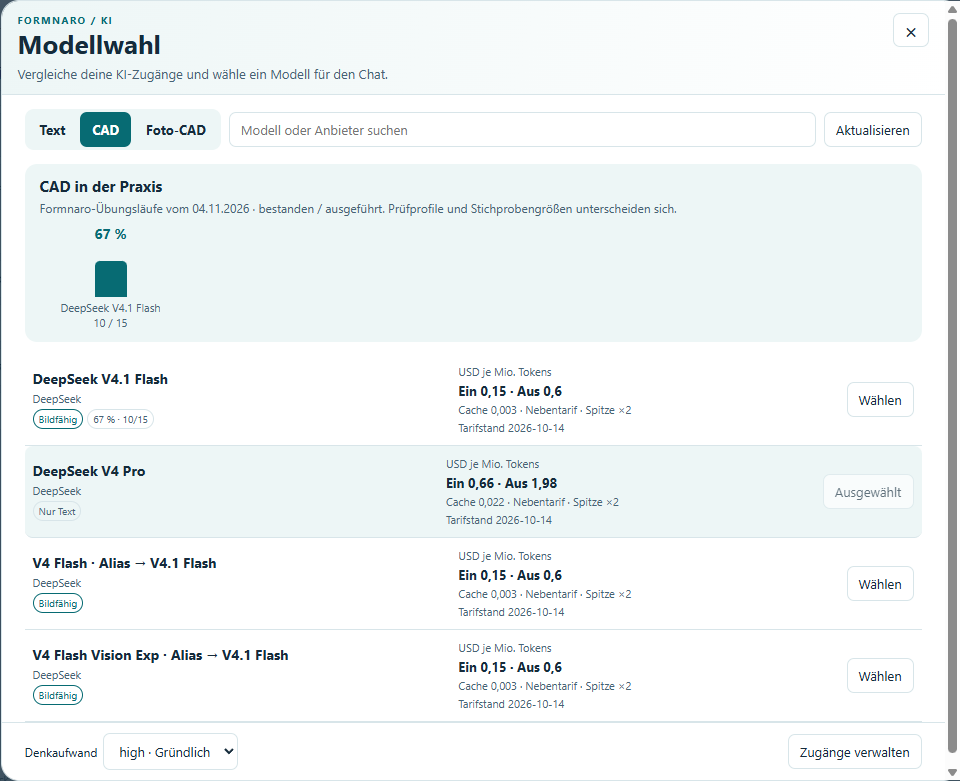

Sign in through your browser
Choose the ChatGPT connection in Settings → AI / API and sign in with your existing account. Mistral Vibe also offers browser sign-in once Vibe is installed. Account sign-in and provider APIs are separate connections.
Formnaro · AI and CAD
Get help designing a part, analyzing a reference photo, or learning a modeling step. Sign in with an existing account, set up a provider API, or connect your own agent through MCP.

The comparison covers results, elapsed time, estimated costs and output tokens for 25 CAD, STL and drawing tasks across eight runs.
Choose the ChatGPT connection in Settings → AI / API and sign in with your existing account. Mistral Vibe also offers browser sign-in once Vibe is installed. Account sign-in and provider APIs are separate connections.
Add an API key for OpenAI, Mistral, DeepSeek, Claude, Gemini, Grok, Groq, Qwen, Kimi, GLM, or MiniMax. You can also enter a compatible endpoint, for example to use a model running locally.
Sign in to Codex as usual and add the local Formnaro MCP adapter. Other clients that support local MCP, such as OpenCode, can use Formnaro tools the same way. The agent uses its own model and provider connection.
Your choices depend on the connection you set up and what your account can access. The model picker shown above lets you search by provider or model and switch between Text, CAD, and Photo CAD. For reference photos, choose a model that accepts images.
Ask for a plate with a centered hole, for example. The Formnaro chat creates a preview you can inspect and apply. An agent with the local interface enabled can read the scene, calculate previews, check dimensions, and apply the requested changes.
Formnaro runs the CAD calculations locally. When you use a cloud model, your message and the context needed for the task go to the selected provider.
See practice mode in action ↗Solid and Fusion practice mode · Release notes for 0.142.0-r1 →
0.139.1-r1 · 14.11.2026
Atomic results, clearer tool feedback, exact legacy sketch references and corrected process shutdown and AI reply handling. 128 standard tests, 152 focused regressions and four new drawing/drilling trials passed. One live trial recovered after a format correction. These are targeted checks, not a fresh full benchmark.
Still open: broader image, supervisor and Sol comparisons, and the native cause of slow process teardown. Earlier benchmarks retain their original versions and results.
Targeted test evidence · Earlier campaign audit · Download and sources
0.138.2-r4 · 09.11.2026
New in 0.138.2-r4: corrected body selection, planar drill references, checkbox states and sketch replacement/height feedback. The original advanced DeepSeek benchmark remains 5/16 on 0.138.0-r1. Separate targeted retests confirmed all 16 original conditions across several builds; this is not a fresh complete 16/16 run. The final A07 repeat with the new EXE passed 8/8 native checks in 144.199 seconds. All earlier Sol/DeepSeek results and successful retests remain unchanged.